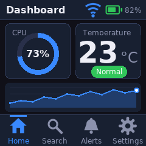
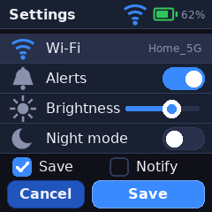
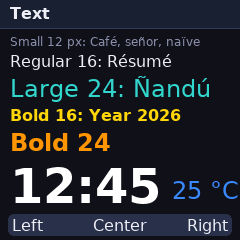
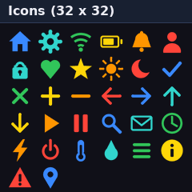

Biblioteca gráfica en C para pantallas ST7789 en STM32
Formas, texto suavizado, iconos, imágenes y widgets para paneles de 240 x 240 en RGB565. Se conecta al hardware con dos funciones, usa solo aritmética entera y todo el dibujo se prueba en el PC.
- C99
- Licencia MIT
- FMC, SPI o bus de 8 bits
- Sin float ni malloc
- Versión de un solo header




Por qué esta biblioteca
Manejar una ST7789 paralela desde un STM32 es fácil de empezar y difícil de hacer rápido. Enviar la ventana de direcciones por cada píxel cuesta 12 escrituras al bus por píxel, así que una pantalla completa necesita 691.200 escrituras. Esta biblioteca fija la ventana una sola vez y envía los píxeles seguidos, con lo que rellenar la pantalla entera baja a 57.611 escrituras.
Rápida por diseño
Cada primitiva pinta tramos de píxeles con una ventana y una ráfaga, y recorta a la pantalla antes. Nada se dibuja píxel a píxel.
Puerto de dos funciones
Implementa gfx_port_cmd() y gfx_port_data() para FMC, SPI o un bus de 8 bits. El resto de la biblioteca nunca toca un registro.
Probable en el PC
Un modelo del controlador se ejecuta en tu ordenador. Las pruebas comparan cada página de la demo con hashes de píxeles antes de llegar a la placa.
Texto suavizado
Seis fuentes proporcionales derivadas de DejaVu Sans, a 4 bits por píxel, con entrada UTF-8 para caracteres Latin-1.
Widgets listos
Panel, botón, interruptor, deslizador, indicador circular, gráfica, lista, barra de pestañas y barra de estado, con tema oscuro y claro.
Poca huella
Solo enteros. Unos 141 KB de datos de fuentes, que el enlazador descarta si no las usas. Sin memoria dinámica.
Cómo dibuja
Se recorta el rectángulo, se fija la ventana del controlador una vez con CASET, RASET y RAMWR, y después cada píxel se envía como una palabra de datos. El controlador avanza por la ventana él solo.

make bench. Un solo píxel cuesta lo mismo en ambos casos; todo lo demás es entre 8 y 12 veces más barato.Inicio rápido
Añade include/ y src/ a tu proyecto, o copia el header único. Después escribe las dos funciones del puerto y dibuja.
#include "gfx_core.h"
#include "gfx_text.h"
#include "gfx_fonts.h"
/* Única conexión con el hardware. FMC de 16 bits, A0 elige comando o dato. */
#define LCD_REG (*(volatile uint16_t *)0x60000000u)
#define LCD_RAM (*(volatile uint16_t *)0x60000002u)
void gfx_port_cmd(uint8_t c) { LCD_REG = c; }
void gfx_port_data(uint16_t d) { LCD_RAM = d; }
void draw(void)
{
gfx_fill_screen(GFX_HEX(0x10131A));
gfx_text(10, 10, "Hola, ST7789", &gfx_font_sans_bold_24,
GFX_WHITE, GFX_HEX(0x10131A));
}Integrarla en STM32CubeIDE
- Copia
include/ysrc/a tu proyecto, por ejemplo enDrivers/stm32-st7789-gfx. - En Propiedades, C/C++ General, Paths and Symbols, añade la carpeta
srccomo ubicación de código y la carpetaincludecomo ruta de includes de GNU C. - Conserva las opciones por defecto
-ffunction-sections -fdata-sectionsy-Wl,--gc-sections: eliminan las fuentes e iconos que no uses. - Guarda los ficheros fuente en UTF-8 para que cadenas como
"25 °C"lleguen bien a la biblioteca. - Alternativa: copia
single_header/lcd_gfx.haCore/Incy, en un único fichero .c, escribe#define GFX_IMPLEMENTATIONantes de incluirlo.
La inicialización del controlador (salir de reposo, formato de píxel, control de acceso a memoria, encender la pantalla) es cosa del código de tu placa, no de esta biblioteca.
El puerto: FMC, SPI y bus de 8 bits
gfx_port_data() transporta dos tipos de datos: parámetros de 8 bits después de CASET o RASET, y píxeles de 16 bits RGB565 después de RAMWR. Con un FMC de 16 bits da igual. Con SPI o un bus de 8 bits hay que recordar el último comando y enviar un byte para los parámetros y dos bytes, primero el alto, para los píxeles.
| Bus | Comando (gfx_port_cmd) | Dato (gfx_port_data) |
|---|---|---|
| FMC de 16 bits | Escribir en la dirección base del banco (A0 = 0) | Escribir en base + 2 (A0 = 1). Conecta FMC_A0 al pin D/CX |
| SPI de 4 hilos | D/C a 0, enviar 1 byte, guardar el comando | D/C a 1; tras RAMWR enviar 2 bytes (alto primero), si no 1 byte |
| Bus de 8 bits | D/C a 0, un pulso de WR con el byte, guardar el comando | D/C a 1; tras RAMWR dos pulsos de WR (alto primero), si no uno |
El código completo de los tres casos está en la guía de integración en inglés.
Problemas típicos
| Síntoma | Causa probable | Qué hacer |
|---|---|---|
| Imagen espejada o boca abajo | Los bits MX o MY del registro de control de acceso a memoria (MADCTL, 0x36) no encajan con tu módulo. | Invierte MX (0x40) o MY (0x80) en la inicialización. |
| Rojo y azul cambiados | El bit RGB/BGR de MADCTL (0x08) no coincide, o en SPI y bus de 8 bits se envía primero el byte bajo. | Cambia el bit BGR y envía primero el byte alto. |
| Desplazamiento: franja con contenido equivocado en un borde | La RAM del controlador es de 240 x 320 y algunos módulos de 240 x 240 muestran solo una parte, con un desplazamiento que depende de la orientación. | Elige la orientación cuya zona visible empieza en la fila 0. La biblioteca no tiene ajuste de desplazamiento. |
| Ruido, nieve, colores erróneos | Temporización del bus demasiado rápida, una línea de datos sin conectar o un ancho de bus mal configurado. | Alarga los tiempos de preparación del FMC, revisa las líneas con las pantallas lisas y acorta los cables. |
| Texto con signos de interrogación | El fichero fuente no está en UTF-8, o el carácter pasa de U+00FF. | Guarda en UTF-8. Las fuentes solo llegan a U+00FF. |
Cada fallo se ve en un patrón concreto del módulo gfx_selftest: barras de color, rampa de grises, marco con esquinas distintas, rejilla con círculo, rectángulos anidados, texto con iconos y pantallas lisas roja, verde y azul. La tabla completa está en la guía en inglés.
Pruebas en tres niveles
- En el PC.
make testejecuta 69 comprobaciones contra un modelo del controlador, compara 16 páginas con hashes FNV-1a de referencia, mide las escrituras al bus y compila con-Wall -Wextra -pedantic -std=c99. Todo se repite con la versión de un solo header. - En la placa. Recorre las nueve páginas de
gfx_selftesty compara con lo esperado. - Integración. Ejecuta el bucle de la demo, mide el tiempo de rellenar la pantalla y compara tus pantallas con su render en el PC.
Los detalles están en la página de pruebas.
Límites conocidos
- Sin rotación: la biblioteca dibuja en la orientación nativa de 240 x 240.
- Las fuentes ocupan unos 141 KB de flash (los 32 iconos, 16 KB más). El enlazador descarta lo que no uses.
- Solo Latin-1: los demás caracteres se dibujan como
?. - Tamaño de pantalla fijo, sin lectura de píxeles y sin DMA incorporado.
Créditos
La biblioteca nació como la práctica 7 de la asignatura de Procesadores y Sistemas Digitales (PSyD) de la Universidad Complutense de Madrid (UCM), escrita para la placa STM32F723E-DISCO, y se ha convertido en un proyecto independiente. Las fuentes derivan de DejaVu Sans; consulta los avisos de terceros.